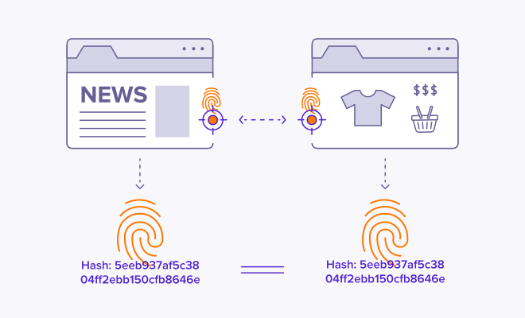

Browser Fingerprint
Your ID:
-
About Browser Fingerprint
Browser fingerprint (also called device fingerprint or online fingerprint) refers to tracking techniques that websites use to collect information about you. Modern website functions require the use of scripts — sets of instructions that tell your browser what to do. Working silently in the background, scripts can identify lots of information about your device and browser that, when stitched together, forms your unique online “fingerprint.” This fingerprint can then be traced back to you across the internet and different browsing sessions.
How does browser fingerprint work?
Browser fingerprint works because websites use scripts that run in the background of your browser. Today’s web browsers have built-in software functions called APIs, which can be used by website scripts to collect information. Generally, scripts are designed for legitimate purposes like rendering videos or photos. If we were to block them, then most websites wouldn’t run properly — they’d “break.”
That means there’s no way for someone to know when websites are collecting their personal information, because fingerprint scripts look just like any other script running on a website. These scripts collect the attributes — device specifications, OS, browser settings and plug-ins, user agents, audio and video capabilities, timezone, and more — that can be compiled into a “hash” or digital fingerprint.
Many website owners and ad networks share browser fingerprint functionality to perform cross-site tracking. That means they use your online fingerprint to track you across the web, and collect intimate details about you: your search history, shopping and news preferences, and more.

Your digital fingerprint, or hash, follows you around the web.
With the help of the following advanced techniques, fingerprint online allows websites to identify individuals with an extremely high degree of accuracy.
| WebGL Fingerprint | |
| Canvas fingerprint | |
| Font Fingerprint | |
| Audio Fingerprint |
Why is browser fingerprint used?
Browser fingerprint is mainly used for web tracking. It’s a more secretive way to track people than simply using tracking cookies, which require consent. But what do companies do with the information they collect? The large majority use this data to advertise to you and personalize your experience online. While being served personalized ads may not seem like a serious issue, the amount of information collected through digital fingerprint and other tracking methods has the potential to be used quite nefariously.